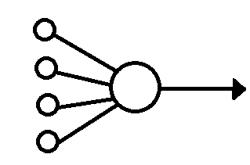
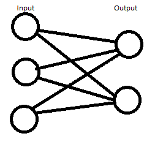

Summary of the Perceptron:
The perceptron is a supervised learning algorithm, created by Rosenblatt in 1958, that is an algorithm that learns by use of an example training set.The perceptron takes a set of input nodes that are connected to a set of output nodes, all inputs nodes connect to all output nodes. Each connection has a weight assigned to it. A sets of the inputs nodes and their target outputs form the training set. The perceptron then makes a prediction and compares the training set against it, and uses an error adjusting rule to modify the weights of connections accordingly. The perceptron keeps repeating this pattern until the error is "close enough" to the correct valuation.
Biological Background:
The perceptron is modelled off of the neuron in the brain. Each node is a representation of an idealised neuron. The neurons are all interconnected and send electrical signals to one another, a single neuron can have multiple incoming neurons connected to it. These neurons "fire" if a certain electrical threshold is exceeded. Different connections between different neurons have varying strengths. Learning happens in the brain by new connections between neurons being formed and the strengths of connections altered.This is of course highly simplified from the actual biological understanding of the brain but is subitably abstract for modelling the perceptron.

How the perceptron works:
Formation of the perceptron:
A simple perceptron is formed out of two "layers" of nodes, one being the input layer, the other being the output layer. Each input node has a connection to each output node, so if there are two output nodes each input node has 2 connections, for 3 output nodes 3 connections and so on, there are no connections between input nodes, each connection has a weight of connection, a real number which can be positive or negative, these weights are assigned randomly at creation.To train the perceptron we need a training set, a set of sets of input nodes an their target output nodes, one input node is assigned to be the bias, the bias is a node that is always in the training set for all outputs. The bias can also be implemented as a number added when calculating the activation. Other values that need to be defined are the learning rate, how much the weights are adjusted by when the perceptron corrects the weights, threshold values for the outputs that the sum of weights must pass for the output node to "fire". Firing being a positve example and not firing a negative example. And finally a delta value, that specifies when to stop the perceptron, when the performance is "close enough".

The perceptron in action:
After the perceptron has been formed, the processing begins, the target set for each output is considered in turn, starting with the target set for the first output,input nodes in the set are assigned values of 1, input nodes not in the set are assigned values of 0. Then the perceptron makes a prediction, this is the total weight to the outputs multiplied by the assigned values of the input nodes that were just assigned. This total value is called the "activation". This is calulated for each of the outputs. The prediction algorithm where a is the activation, d is the current input, D is the number of inputs, Wd is the weight of input d to the
target output and Xd is the value of the input node.
The prediction algorithm where a is the activation, d is the current input, D is the number of inputs, Wd is the weight of input d to the
target output and Xd is the value of the input node.Now that the perceptron has made it's predictions, it compares the activations to the thresholds of the outputs, assigns 1 if the activation is equal to or above the threshold, and 0 otherwise. These are the output values.
Now the perceptron compares these values to the training set and adjusts the weights accordingly. It comapres by taking the desired output for each node and taking away the calculated output value. This is the error value and is either 0 or -1 where 0 indicates no change needed and -1, then adjustment is required.
 The error calculation, where t is the target output, X is the calculated output, p is the target pattern and "it" is the current iteration.
The error calculation, where t is the target output, X is the calculated output, p is the target pattern and "it" is the current iteration.Now the weight adjustment values for each weight which is the learning rate, multiplied by the error value and the input node value. This adjustment value is then added to the weight.
 The error correction algorithm, where C is the learning rate, e is the target error, p is the target pattern and "it" is the current iteration.
The error correction algorithm, where C is the learning rate, e is the target error, p is the target pattern and "it" is the current iteration.
Now the perceptron adjusts the weights for each connection.

Once this process has been completed for all patterns in the training set the perceptron calculates it's performance or RMS value. This is obtained by taking the sum of the target errors squared and then dividing it over the multipled number of target patterns and the number of outputs, then square rooting that value.
 The RMS algorithm where Np is the number of patterns, No is the number of outputs and e is the target error.
The RMS algorithm where Np is the number of patterns, No is the number of outputs and e is the target error.This RMS value is then compared against the delta value, if less than or equal to then the perceptron stops. Otherwise this process repeats until it does, each repitition is known as an iteration. It is also worth noting that the perceptron can fail and have an infinite reajustment as shown in the incorrect example.
Limitations of the perceptron:
The classical perceptron is limited to being able to recongise only linear classifications, the perceptron will fail on non-linear inputs, such as attempting to model the XOR (exclusive or) logical operator, this where we have one or the other but not both, modelled in the truth table below:
| a | b | a XOR b |
|---|---|---|
| true | true | false |
| true | false | true |
| false | true | true |
| false | false | false |
It is not possible for a two layer perceptron to model this, we won't go into the details of why this dosen't work here. For non-linear functions such as XOR we need to extend the perceptron to multi-layer perceptrons, these allow for "hidden" layers between the input and output layers, we won't go into detail on how these work either suffice to say, that they allow for modelling of the XOR function.